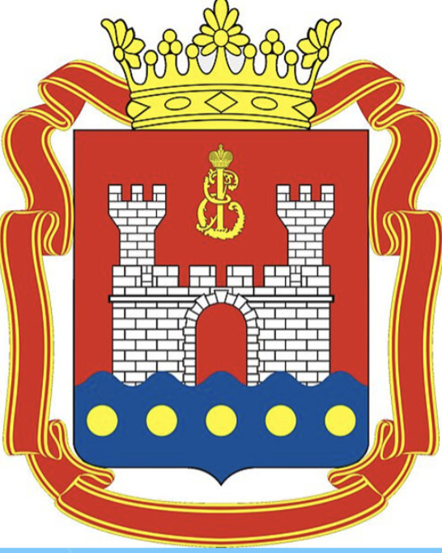

Personal Summary
I have 15+ years of experience in IT industry. Wide expertise to architect, implement and support any types of IT projects, from small startup installations with cost efficiency as a priority to participating in huge enterprise ecosystems where communication is the most valuable skill. I am an experienced engineer ready to provide high-level tech support for the client. Extensive Linux, Windows, Hardware, Software experience. Passionate about Cloud Native, Open source and Platform engineering.
Academic Qualification
2004–2009 Immanuel Kant Baltic Federal University — Master of Science (M.Sc.), Theoretical Physics.
2008–2009 Immanuel Kant Baltic Federal University — Continuing Education Course, Network administrator.
Work Experience
Jan 2019 – present
Millions of users, thousands of employees, hundreds of micro-services, and tens of applications.
In my current role I’m successfully managing multiple SRE teams. I write code, conduct code reviews, write documentation, manage tasks and the SRE workload, educate DEV and QA teams. I also participate in the Architecture council.
With one of my teams, we created a full-cycle framework and implemented a platform based on this framework. We migrated an entire project (80+ microservices, 200+ developers and testers) from manually provisioned hosts running various Java applications to a fully automated Kubernetes-based, GitOps-centric, agile, robust, and scalable platform with stakeholder approval for production flow. The results include:
- Developers no longer require intervention from the Operations team to implement app architecture changes or add new functionality.
- Deployment frequency increased from 1–2 releases per month to semi-daily.
- Releases now rarely require downtime (90% of cases), compared to the past when 4 out of 5 releases/maintenances required negotiation and agreement with multiple layers of management for downtime.
- Reliability finally reached double nines.
Other projects I lead include:
- Building an internal unified artifacts storage used by all Wiley development teams (50+ teams, 1000+ devs). JFrog Artifactory as a base; Terraform for side infrastructure; EKS and eksctl for Kubernetes; AWS Aurora MySQL and S3 for storage; Flux and Helm for CI/CD. We support 10+ different repository types (PyPI, Helm, Docker, Maven, Gradle, Go, rpm).
- Supporting Wiley’s main Jenkins server, providing exceptional support to various users — from non-technical article editors to executive management and savvy developers. It is a high-load, highly available, mission-critical cluster; also participating in night shifts to keep it running 24/7.
- Managing Wiley’s GitHub organization: weekly meetings with the GitHub team (PM and tech reps). Delivered native solutions such as migrating Jenkins workloads to GitHub Actions, using GitHub Codespaces for data scientists, and integrating GitHub user management with Wiley’s Single Sign-On (SSO) system.
Other tasks include
- Vulnerability resistance: creating and managing HashiCorp Packer and automated Wiley–AWS AMI replacement.
- Secrets handling: HashiCorp Vault, AWS Parameter Store, Secrets Manager.
- Better traffic routing: Nginx Ingress, AWS aws-load-balancer-controller.
- Better code: GitHub repository management best practices; creating and supporting internal Terraform modules.
Writing internal tools such as:
- Wiley Terraform discrepancy report (Python/Go).
- Wiley AMI updater (Python).
- Wiley ASG EC2 Docker container updater (Bash/Python).
Jul 2016 – Dec 2018 (2 years 6 months)
- Providing excellent technical support for Managed Service Providers (MSPs) and end clients by phone, email, and remote access.
- On-boarding new clients — careful, courteous, and highly professional engagement.
- Disaster recovery.
- File restore.
- Preparation and launch of entire company infrastructure on a Private Cloud environment (cloud failover).
Troubleshooting:
- Microsoft VSS issues.
- MS SQL backup/recovery issues.
- MS Exchange database/mailbox/mail backup & recovery issues.
IT Infrastructure Architect Consultant
Mar 2015 – May 2016 (1 year 3 months) · Remote · Part-time
- Resolve urgent production issues.
- Advising local system administrators.
- Best practices.
Apr 2015 – Sep 2015 (6 months)
SQL; terminal servers; Active Directory; Azure; Exchange 2010/2013; Office 365; Xen/Hyper-V/ESXi; backups; Zabbix; service desk; integrations.
Jun 2012 – Mar 2015 (2 years 10 months)
- MS SQL.
- Terminal Servers.
- Active Directory.
- Exchange Server (2010/2013), Office 365.
- Virtualization: Xen, Hyper-V, ESXi.
- Backups.
- Zabbix.
- Technical Support, Service Desk.
- Azure Cloud.
- Cisco L2/L3.
- Kaspersky Security Center.
- VoIP/IP — Avaya; Asterisk.
- UTM FortiGate (firewall).
Mar 2011 – Jun 2012 (1 year 4 months)
- User support (1st–2nd line): Windows XP/7/8; Linux (Ubuntu).
- AD — create users and groups.
- GPO — IE, firewall and other OS settings; software deployment.
- TMG Forefront — creating and managing rules.
- Kaspersky Security Center v9.
- SharePoint 2007 — portal support; Outlook integration.
- Flash — advertising banners for marketing.
- Kerio Mail Server — mailboxes and groups.
Teacher of Physics / System Administrator

Jul 2009 – Feb 2011 (1 year 8 months)
Teaching physics (secondary school).
Jun 2006 – Dec 2008 (2 years 7 months)
Laying network cables / setting up software.
Certificates
- Microsoft: MCSE (Messaging); MCSA Office 365; MCSA Windows Server 2012.
- AWS: SOA-C01 — Certified SysOps Administrator.
Languages
English — read/write/speak (IELTS 8). Russian — native.